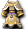

城鎮結構指南
- 履歷 無
- 開始條件
- 建立新角色後，抵達職業城鎮時自動開始。
- 內容
- 一路閱讀阿斯嘉特的基本操作說明文章，並回答2道問答。
- 問答本身設計成不論選哪個選項都算正確。
- 第一題選「否」、第二題選「是」，也可以取消任務。
- 報酬
- 第1題答對1000glod，第2題答對2000glod
今日遊戲提示
- 履歷 無
- 開始條件
- 點擊畫面左下出現的綠色△圖示。
每天發生1次。已確認在Lv2～50會發生。
- 點擊畫面左下出現的綠色△圖示。
- 內容
- 回答隨機？出題的問答。答對就能獲得報酬。
- 開啟任務視窗的快捷鍵是？ ⇒快捷鍵「Q」
- 開啟世界地圖的快捷鍵是？ ⇒快捷鍵「W」
- 截圖的快捷鍵是？ ⇒快捷鍵「F12」
- 開啟遊戲內佈告欄的方法是？ ⇒快捷鍵「F2」
- 密語的操作是？ ⇒快捷鍵「ALT+W」
- 在社群視窗中無法做的事是？ ⇒「查看任務」
- 改變角色方向的操作是？ ⇒「SHIFT」
- 讓角色自動移動的操作是？ ⇒「持續按住滑鼠游標左鍵」
- 查看稱號的步驟是？ ⇒「I按鈕-傳說按鈕-稱號按鈕」
- 請選出不屬於赫爾的等級。 ⇒「60」
- 在天上界無法提升的等級是？ ⇒「名聲等級」
- 交易時確認道具詳細資訊的方法是？ ⇒「按右鍵」
- 造成強力打擊的順序是？ ⇒「正面＜側面＜背面」
- 近戰攻擊連續攻擊的秘訣是？ ⇒「快速欄→空白鍵」
- 提升名聲等級時，下列哪項不是優點？ ⇒「獲得HP/MP/SP點數加成」
其他不明
- 回答隨機？出題的問答。答對就能獲得報酬。
- 報酬
- 依等級而異。
Lv2-10 1,000glod
Lv11-20 2,000glod
Lv21-30 4,000glod
Lv31-40 經驗值8,000
Lv41-50 經驗值13,000
- 依等級而異。
- 備註
即使因上述報酬獲得經驗值，達到本來可以升級的經驗值，也會停在100%。
因此，想要升級的話，至少要打倒1隻摩斯之類的怪物 - -技巧
在歡樂時光期間完成任務時，如果報酬是經驗值，會套用歡樂時光，變成1.5倍。
所以在歡樂時光時完成任務比較好。 自2009/10/30起已修正。
網咖特典、經驗藥水也相同。
未實裝23
畫面左下方會出現黃色的「未實裝」圖示。點兩下也不會發生任何事。看來真的就是「未實裝」。
長老領主任務指南
- 履歷 師父與徒弟
- 開始條件
- Lv1～49。尚未成為徒弟。
- 內容
- 與盧亞斯、
 米魯里斯、斯歐米、魔界村、魯克西翁各城鎮的NPC「長老領主」對話。成為徒弟後，再次與長老領主對話。
米魯里斯、斯歐米、魔界村、魯克西翁各城鎮的NPC「長老領主」對話。成為徒弟後，再次與長老領主對話。
- 與盧亞斯、
- 報酬
| 職業 | 性別 | 報酬 |
| 戰 | ♂ | 50,000glod、長老戰士護甲1個 |
| ♀ | 50,000glod、長老女武神護甲1個 | |
| 修 | ♂ | 50,000glod、長老神佑武道裝1個 |
| ♀ | 50,000glod、長老武道之魂1個 | |
| 盜 | ♂ | 50,000glod、長老寶藏短衫1個 |
| ♀ | 50,000glod、長老寶藏背心1個 | |
| 聖 | ♂ | 50,000glod、長老神職者之魂1個 |
| ♀ | 50,000glod、長老祭司之魂1個 | |
| 魔 | ♂ | 50,000glod、長老德魯伊披風1個 |
| ♀ | 50,000glod、長老法師披風1個 | |
| 預 | ♂ | 50,000glod、長老精煉罩袍1個 |
| ♀ | 50,000glod、長老拉皮內斯修爾1個 |
[城鎮名]新手任務1
- 履歷 新手任務1(已執行完成?次)
- 開始條件
- 等級1～3 在米魯里斯、盧亞斯、斯歐米、魔界村、魯克西翁、艾德安德各城鎮與NPC「小烏鵝」對話。
- 等級1～3 在米魯里斯、盧亞斯、
- 內容・報酬
- 打倒指定的怪物即完成任務(不需回報，當場會跳出視窗並獲得獎賞)。
- 若是某人的徒弟，報酬glod會變成2倍。
- 據說組PT時只有最後一個人會被計算，但只要聊天視窗顯示黃色的計數，就對應該數字
- 記載的報酬為「500格羅德」和「經驗值500」
另外，完成時的報酬經驗值會套用歡樂時光等加成。
※ 每個城鎮的指定怪物不同，每個職業的報酬道具也不同！
※ 已將報酬變更為2009/11/8的狀態。確認中，請提供情報。
| 討伐怪物 | 報酬 | |
| 米魯里斯 | 摩斯15隻 | 2000glod、經驗值500、舊赫爾莉菈6個(戰)2000glod、經驗值500、舊赫爾莉菈6個(修)2000glod、經驗值500、舊赫爾莉菈6個(盜)2000glod、經驗值500、舊瑪娜莉菈6個(聖)2000glod、經驗值500、舊瑪娜莉菈6個(魔)2000glod、經驗值500、舊瑪娜莉菈6個(預)2000glod、經驗值500、舊****6個(騎)2000glod、經驗值500、舊****6個(吟) |
| 盧亞斯 | 摩斯15隻 | |
| 斯歐米 | 彭15隻 | |
| 魔界村 | 普洛布15隻 | |
| 魯克西翁 | 奇奇15隻 | |
| 艾德安德 | 蝙蝠15隻 |
[城鎮名]新手任務2
- 履歷 新手任務2(完成次數？)
- 開始條件
- 等級4～6 在米魯里斯、盧亞斯、斯歐米、魔界村、魯克西翁、艾德安德各城鎮與NPC「小烏鵝」對話。
- 等級4～6 在米魯里斯、盧亞斯、
- 內容・報酬
- 打倒指定的怪物即完成任務(不需回報，當場會跳出視窗並獲得獎賞)。
- 若是某人的徒弟，報酬glod會變成2倍。
- 據說組PT時只有最後一個人會被計算，但只要聊天視窗顯示黃色的計數，就對應該數字
- 記載的報酬為「1000格羅德」和「經驗值1000」
另外，完成時的報酬經驗值會套用歡樂時光等加成。
※ 每個城鎮的指定怪物不同，每個職業的報酬道具也不同！
※ 已將報酬變更為2009/11/8的狀態。確認中，請提供情報。
| 討伐怪物 | 報酬 | |
| 米魯里斯 | 奇奇15隻 | 4000glod、經驗值2000、舊****7個、舊****3個(戰)4000glod、經驗值2000、舊赫爾莉洛7個、水果3個(修)4000glod、經驗值2000、舊赫爾莉洛7個、水果3個(盜)4000glod、經驗值2000、舊瑪娜莉洛7個、舊赫爾莉洛3個(聖)4000glod、經驗值2000、舊瑪娜莉洛7個、舊赫爾莉洛3個(魔)4000glod、經驗值2000、舊瑪娜莉洛7個、舊赫爾莉洛3個(預)4000glod、經驗值2000、舊****7個、舊****3個(騎)4000glod、經驗值2000、舊****7個、舊****3個(吟) |
| 盧亞斯 | 普洛布15隻 | |
| 斯歐米 | 奇奇15隻 | |
| 魔界村 | 小魔瓜15隻 | |
| 魯克西翁 | 比比白猴15隻 | |
| 艾德安德 | 海灣蜥蜴15隻 |
- ※ 已確認預言者Lv4-6時可接到Ed,Lou,Mi,Su的任務2。Lv7時在Sa接到任務3。
[城鎮名]新手任務3
- 履歷 新手任務3(完成次數？)
- 開始條件
- 等級7～9 與米魯里斯、盧亞斯、斯歐米、魔界村、魯克西翁各城鎮、各森林3或艾德安德的NPC「小烏鵝」對話。(※在森林3也能接任務，但目前對話中敵人的攻擊也會打到你。)
- 等級7～9 與米魯里斯、盧亞斯、
- 內容・報酬
- 打倒指定的怪物即完成任務(不需回報，當場會跳出視窗並獲得獎賞)。
- 若是某人的徒弟，報酬glod會變成2倍。
- 據說組PT時只有最後一個人會被計算，但只要聊天視窗顯示黃色的計數，就對應該數字
- 記載的報酬為「2000格羅德」和「經驗值2000」
另外，完成時的報酬經驗值會套用歡樂時光等加成。
※ 每個職業的報酬道具不同！(確認中，請提供情報。)
| 討伐怪物 | 報酬 | |
| 米魯里斯 | 摩斯戰士15隻 | 5000glod、經驗值3500、舊史黛莉洛10個(戰)史黛莉洛10個(修)5000glod、經驗值3500、舊史黛莉洛10個(盜)5000glod、經驗值3500、舊瑪娜莉洛10個(聖)5000glod、經驗值3500、舊瑪娜莉洛10個(魔)瑪娜莉洛10個(預)***個(騎)***個(吟) |
| 盧亞斯 | 迪斯15隻 | |
| 斯歐米 | 彭澤奇15隻 | |
| 魔界村 | 南瓜15隻 | |
| 魯克西翁 | 南瓜15隻 | |
| 艾德安德 | 巴巴牙蜥蜴15隻 |
- ※ 各城鎮的討伐怪物情報蒐集完畢。感謝大家的協助！
獲得等級1氣力魔法
- 履歷 獲得等級1氣力魔法
- 開始條件 達到Lv10
- 內容 達到Lv10時，NPC「新手守衛」會來搭話。
※若到了Lv10還沒有人來搭話，換伺服器等操作後，畫面左端會出現!圖示，即可繼續進行。 - 報酬 依職業而異
戰盜修騎 氣力動作[等級1]
魔聖吟 氣力意象[等級1]
預 氣力動作[等級1],氣力意象[等級1](兩者皆有)
[城鎮名]新手任務4
- 履歷 新手任務4(完成次數？)
- 開始條件
- 等級10～12 與盧亞斯或盧亞斯森林3的NPC「小烏鵝」對話。在盧亞斯以外(包含各森林)，Lv10以後會被告知要去盧亞斯，無法接任務。(※在森林3也能接任務，但目前對話中敵人的攻擊也會打到你。)
- 內容・報酬
- 打倒指定的怪物即完成任務(不需回報，當場會跳出視窗並獲得獎賞)。
- 若是某人的徒弟，報酬glod會變成2倍。
另外，完成時的報酬經驗值會套用歡樂時光等加成。
※ 每個職業的報酬道具不同！(確認中，請提供情報。)
| 討伐怪物 | 報酬 | |
| 盧亞斯 | 達伊特15隻 | 6000glod、經驗值5000、舊赫爾莉克4個、肉4個(戰)赫爾莉克4個、肉4個(修)6000glod、經驗值5000、舊赫爾莉克4個、肉4個(盜)6000glod、經驗值5000、舊赫爾莉洛4個、舊瑪娜莉克4個(聖)6000glod、經驗值5000、舊赫爾莉洛4個、舊瑪娜莉克4個(魔)瑪娜莉克4個、赫爾莉洛4個(預)***個(騎)***個(吟) |
屬性裝備任務
- 履歷 屬性裝備任務
- 開始條件 達到Lv11。點擊畫面左下方出現的綠色△圖示。
- 內容 達到Lv11時，NPC「新手守衛」會來搭話。
依照指示打倒10隻目標怪物，並依指示行動。 - 獎勵品
暫時的腰帶 1個
暫時的項鍊 1個
說明書 1個
戴姆輕腰帶 1個 (從5種屬性輕腰帶中選1個)
吉哥爾輕腰帶 1個 (從5種屬性輕腰帶中選1個)
凱隆輕腰帶 1個 (從5種屬性輕腰帶中選1個)
格蘭輕腰帶 1個 (從5種屬性輕腰帶中選1個)
連斯勳章 1個 (從5種屬性勳章中選1個)
雷恩勳章 1個 (從5種屬性勳章中選1個)
火焰勳章 1個 (從5種屬性勳章中選1個)
布里茲勳章 1個 (從5種屬性勳章中選1個)
※經常發生bug，常常無法進行任務。
bug範例
任務本身不發生、被傳送到奇怪的地方、新手守衛說的話莫名其妙等
德佩羅的請託
- 履歷 德佩羅的請託
- 開始條件 Lv11以上
- 內容
1.與德佩羅對話，接下任務
2.與交流廣場的德雷恩對話，領取道具。
3.把道具送交給德佩羅 - 報酬
盜戰騎 皮革手套
修 武道家護腕
聖魔吟 法師手套
預 皮革手套或法師手套(擇一)
[城鎮名]新手任務5
- 履歷 新手任務5(完成次數？)
- 開始條件
- 等級13～15 與盧亞斯或盧亞斯森林3的NPC「小烏鵝」對話。在盧亞斯以外(包含各森林)，Lv10以後會被告知要去盧亞斯，無法接任務。(※在森林3也能接任務，但目前對話中敵人的攻擊也會打到你。)
- 內容・報酬
- 打倒指定的怪物即完成任務(不需回報，當場會跳出視窗並獲得獎賞)。
- 若是某人的徒弟，報酬glod會變成2倍。
另外，完成時的報酬經驗值會套用歡樂時光等加成。
※ 每個職業的報酬道具不同！(確認中，請提供情報。)
| 討伐怪物 | 報酬 | |
| 盧亞斯 | 血腥南瓜15隻 | 舊史黛莉克10個(戰)史黛莉克10個(修)8000glod、經驗值7500、舊史黛莉克10個(盜)8000glod、經驗值7500、舊瑪娜莉克10個(聖)8000glod、經驗值7500、舊瑪娜莉克10個(魔)瑪娜莉克10個(預)***個(騎)瑪娜莉克10個(吟) |
常設活動指南用問答
- 履歷 常設活動介紹用問答
- 開始條件 Lv15～(已確認85修道士／89魔術師也可以)
- 內容 與盧亞斯、米魯里斯、斯歐米、魔界村、魯克西翁任一城鎮的NPC「蓋爾丁」對話，
聽完全部5項說明後，回答5道問題即可獲得獎勵
順帶一提，選擇「稍後回答」也能拿到名牌。
(部分未翻譯) - 獎勵品 名牌 1個
全對 50,000Glod
答對4題 40,000Glod
答對3題 10,000Glod
答對2題 5,000Glod
答對1題 ?
全錯 0Glod - 解答
第1題 修道士
第2題 交流廣場
第3題 帽子
第4題 30
第5題 2
[城鎮名]新手任務6
- 履歷 新手任務6(完成次數？)
- 開始條件
- 等級16～18 與盧亞斯或盧亞斯森林3的NPC「小烏鵝」對話。在盧亞斯以外(包含各森林)，Lv10以後會被告知要去盧亞斯，無法接任務。(※在森林3也能接任務，但目前對話中敵人的攻擊也會打到你。)
- 內容・報酬
- 打倒指定的怪物即完成任務(不需回報，當場會跳出視窗並獲得獎賞)。
- 若是某人的徒弟，報酬glod會變成2倍。
另外，完成時的報酬經驗值會套用歡樂時光等加成。
※ 報酬道具依職業而異！(確認中，請提供情報。)
| 討伐怪物 | 報酬 | |
| 盧亞斯 | 迪斯特15隻 | 4500glod、經驗值8000、***個10000glod、經驗值10000、舊赫爾莉克夏5個、肉5個(盜)10000glod、經驗值10000、舊瑪娜莉克夏5個、舊赫爾莉洛5個(聖)10000glod、經驗值10000、舊瑪娜莉克夏5個、舊赫爾莉洛5個(魔) |
- ※ 各職業報酬道具 戰: 修:赫爾莉克夏5個、肉5個 賊: 騎:聖: 吟: 預:瑪娜莉克夏5個、赫爾莉洛5個
[城鎮名]新手任務7
- 履歷 新手任務7(完成次數？)
- 開始條件
- 等級19～20 與盧亞斯或盧亞斯森林3的NPC「小烏鵝」對話。在盧亞斯以外(包含各森林)，Lv10以後會被告知要去盧亞斯，無法接任務。(※在森林3也能接任務，但目前對話中敵人的攻擊也會打到你。)
- 內容・報酬
- 打倒指定的怪物即完成任務(不需回報，當場會跳出視窗並獲得獎賞)。
- 若是某人的徒弟，報酬glod會變成2倍。
另外，完成時的報酬經驗值會套用歡樂時光等加成。
※ 報酬道具依職業而異！(確認中，請提供情報。)
| 討伐怪物 | 報酬 | |
| 盧亞斯 | 曼德拉15隻 | 5000glod、經驗值10000、***個15000glod、經驗值13000、舊史黛莉克夏10個(盜)15000glod、經驗值13000、舊瑪娜莉克夏10個(聖)15000glod、經驗值13000、舊瑪娜莉克夏10個(魔) |
- ※ 各職業報酬道具 戰: 修:史黛莉克夏10個 賊: 騎:聖,吟,預:舊瑪娜莉克夏10個
長老的試驗(等級20～30)
- 履歷 20-30輔助任務完成(僅限徒弟)
- 開始條件 徒弟Lv20～，由師父向盧亞斯、米魯里斯、斯歐米、魔界村、魯克西翁各城鎮的NPC「長老領主」對話。其他徒弟正在進行同一任務時無法開始。
- 內容 師父向長老領主支付費用(1,000glod)，徒弟接受修行任務。
徒弟達到目標等級(Lv25～30)後，依序由徒弟、師父向長老領主對話，領取報酬。
另外，一直到Lv70都有。 - 報酬 與提升的等級數成正比
徒弟：經驗值(10,000*上升Lv)、金錢(2,200*上升Lv)glod
師父：名聲(1,600*上升Lv)
脫離新手裝備
- 履歷 不明
- 開始條件 達到Lv21。點擊畫面左下方出現的黃色○圖示[購買新手畢業裝備]。
- 內容 新手守衛會來搭話。
- 報酬 可以領取新手畢業裝備。
長老的試驗(等級30～40)
- 履歷 30-40輔助任務完成(僅限徒弟)
- 開始條件 徒弟Lv31～，由師父向盧亞斯、米魯里斯、斯歐米、魔界村、魯克西翁各城鎮的NPC「長老領主」對話。其他徒弟正在進行同一任務時無法開始。
- 內容 師父向長老領主支付費用(2,000glod)，徒弟接受修行任務。
徒弟達到目標等級(Lv35～40)後，依序由徒弟、師父向長老領主對話，領取報酬。 - 報酬 與提升的等級數成正比
徒弟：經驗值(12600*上升Lv)、金錢(4950*上升Lv)glod
師父：名聲(2,430*上升Lv)
長老的試驗(等級40～50)
- 履歷 40-50輔助任務完成(僅限徒弟)
- 開始條件 徒弟Lv41～，由師父向盧亞斯、米魯里斯、斯歐米、魔界村、魯克西翁各城鎮的NPC「長老領主」對話。其他徒弟正在進行同一任務時無法開始。
- 內容 師父向長老領主支付費用(4,000glod)，徒弟接受修行任務。
徒弟達到目標等級(Lv45～50)後，依序由徒弟、師父向長老領主對話，領取報酬。 - 報酬 與提升的等級數成正比
徒弟：經驗值(24,000*上升Lv)、金錢(10,000*上升Lv)glod
師父：名聲(5,000*上升Lv)
50地獄通關
- 履歷 赫爾等級任務
- 開始條件 Lv50。點擊畫面左下方出現的黃色○圖示[赫爾等級報酬任務]。
但是，高階職業的騎士、吟遊詩人、阿修羅在轉職前不可進行過此任務。 - 內容 達到Lv50時，NPC「新手守衛」會來搭話。
達到Lv51時會送上慶祝禮物。 - 獎勵品 獲得的技能依職業而異
戰：火焰斬擊
修：下踢
盜：雙重抓擊
聖：解毒術
魔：散沙術
預：火焰洗牌
騎：爆裂灰燼
吟：靈魂尖叫(Lv制)
阿：費亞爾
船長守衛 1個 (限男性角色)
小丑守衛 1個 (限女性角色)
長老的試驗(等級50～60)
- 履歷 50-60輔助任務完成(僅限徒弟)
- 開始條件 徒弟Lv51～?，由師父向盧亞斯、米魯里斯、斯歐米、魔界村、魯克西翁各城鎮的NPC「長老領主」對話。其他徒弟正在進行同一任務時無法開始。
- 內容 師父向長老領主支付費用(7,000glod)，徒弟接受修行任務。
徒弟達到目標等級(Lv55～60)後，依序由徒弟、師父向長老領主對話，領取報酬。 - 報酬 與提升的等級數成正比
徒弟：經驗值(44,000*上升Lv)、金錢(15,000*上升Lv)glod
師父：名聲(8,300*上升Lv)
長老的試驗(等級60～70)
- 履歷 60-70輔助任務完成(僅限徒弟)
- 開始條件 徒弟Lv61～?，由師父向盧亞斯、米魯里斯、斯歐米、魔界村、魯克西翁各城鎮的NPC「長老領主」對話。其他徒弟正在進行同一任務時無法開始。
- 內容 師父向長老領主支付費用(10,000glod)，徒弟接受修行任務。
徒弟達到目標等級(Lv65～70)後，依序由徒弟、師父向長老領主對話，領取報酬。
長老的試驗到此為止。 - 報酬 與提升的等級數成正比
徒弟：經驗值(88,000*上升Lv)、金錢(22,000*上升Lv)glod
師父：名聲(11,600*上升Lv)
獲得等級4氣力魔法
- 履歷 獲得等級4氣力魔法
- 開始條件 達到Lv99
- 內容 達到Lv99時，NPC「」會來搭話。
- 報酬 依職業而異
戰盜修騎 氣力動作[等級4]
魔聖吟 氣力意象[等級4]
預 氣力動作[等級4]、 氣力意象[等級4](兩者皆有)
氣力意象[等級4](兩者皆有)
任務手冊[初級]
- 履歷 無
- 開始條件 2008年11月19日以後，建立新角色時取得任務手冊[初級]
滿足任務手冊中記載的各任務開始條件即可進行任務 - 內容
完成任務手冊後，向各城鎮的安德烈回報
完成各任務後，按下<任務完成後請點擊>，就會蓋上MISSION COMPLETE!!的印章
※2011.4.27維護後，任務名稱及部分任務內容已變更（下方未反映）。
Mission01.新手任務(1~20)
Mission02.討伐摩斯(5以上)
Mission03.收集治療材料吧(6以上）
Mission04.等級1氣力魔法(10以上)
Mission05.瞬間移動捲軸(15以上） ※在盧亞斯、米魯里斯、斯歐米也可進行
Mission06.德佩羅的請託(11以上）
Mission07.常設活動問答(15以上）
Mission08.皮塔的遺骨(17以上）
Mission09.粗魯者皮耶特羅1(20以上)
Mission10.幫我找工具箱(21以上)
Mission11.可愛的新手畢業(21以上) ※帝王蟹、卡迪、魯德、金屬精靈
Mission12.古代人的數字1(31以上) ※實際上是Lv21以上
Mission13.可愛的新手畢業(31以上)
Mission14.粗魯者皮耶特羅2(35以上)
Mission15.古代人的數字2(31以上)
Mission16.粗魯者皮耶特羅3(40以上)
Mission17.挖掘碉堡探險(41以上）
Mission18.古代人的數字3(41以上)
Mission19.等級2氣力魔法(51以上)
Mission20.古代人的數字4(51以上)
- 獎賞
- 完成任務手冊
稱號：任務手冊大師
- 完成任務手冊
- 獎賞
1金錢：5000 經驗值：10000 名聲：500
2金錢：5000 經驗值：10000 名聲：750 名聲:500 (合計1250)
3金錢：5000 經驗值：??? 名聲：???
4金錢：5000 經驗值：??? 名聲：???
5金錢：5000 經驗值：10000 名聲：750 名聲:500 (合計1250)
6金錢：20000 經驗值：40000 名聲：2000
7金錢：20000 經驗值：??? 名聲：???
8金錢：20000 經驗值：??? 名聲：???
9金錢：20000 經驗值：??? 名聲：???
10金錢：20000 經驗值：??? 名聲：???
11經驗值與海盜帽子，或小丑帽子
12經驗值與海盜帽子，或小丑帽子
13經驗值與海盜帽子，或小丑帽子
14經驗值與海盜帽子，或小丑帽子
15經驗值與海盜帽子，或小丑帽子
16經驗值：190000 名聲：9000 朱諾克帽
17
18
19經驗值：190000 名聲：9000 朱諾克帽
20完成任務手冊時
稱號…任務手冊大師
經驗 300000 名聲 15000
預戰賊 黃金鞋
修阿 經驗 300000 名聲 15000 黃金腳環
魔 經驗 300000 名聲 15000 黃金鞋 因提歐奇爾提(61服女)
58魔 沒有拿到因提歐奇爾提。
73魔 沒有拿到因提歐奇爾提。
怪物相簿
- 履歷 不明
- 開始條件
- 內容
- 使用在活動點數商店或付費商店可購買的怪物相機拍攝怪物，完成怪物相簿，就能獲得道具和稱號。
- 雙擊怪物相機，用出現的法杖圖示點擊怪物即可拍攝。越強的怪物拍攝越花時間，也可能失敗。付費道具的「怪物相機[EX]」可以在較短時間內拍攝。
- 拍攝的照片會儲存在個人資訊視窗右下角的怪物收藏中。
- 相簿必須用全部不同的怪物填滿1頁。每填滿1頁，就能收到可獲得新道具和新稱號的「神秘相簿箱（Lv1～LV4之一）」。
- 收集越強怪物的相簿，就能收到越高等級的「神秘相簿箱」。
- 各城鎮的什貨店有販售「怪物相簿重置藥」。
(了解的人，請補充。)
- 褒章 神秘相簿箱（Lv1～LV4之一）
- 神秘相簿箱開出的道具
- Lv1 魔法衝擊-2、
 [稱號]怪物粉絲、???
[稱號]怪物粉絲、??? - Lv2 幻影艾克薩耳環[Lv1]、
 幻影復仇者長靴[Lv1]、[稱號]攝影助手、???
幻影復仇者長靴[Lv1]、[稱號]攝影助手、??? - Lv3 ???
- Lv4 稱號]神之眼、[稱號]怪物大老師、古典相機（30天期限的外觀武器）、
 染色藥、幻影系裝備lv1~2（7天期限）、幻影系裝備lv3（無期限）
染色藥、幻影系裝備lv1~2（7天期限）、幻影系裝備lv3（無期限）
- Lv1 魔法衝擊-2、
※1頁怪物的等級總和
 為1,076時，褒章的神秘相簿箱等級似乎為1
為1,076時，褒章的神秘相簿箱等級似乎為1
為1,794時，褒章的神秘相簿箱等級似乎為1
為2,493～2,731時，褒章的神秘相簿箱等級似乎為2（因有2種怪物不明，數值有幅度）
善惡(兩者皆有)2次Lv120的怪物填滿後似乎是Lv2（合計4200）
迷你骷髏的請求
- 履歷 無
- 開始條件 與迷你骷髏對話
- 內容・獎勵品
| 內容 | 獎勵品 | |
| 第1次 | 加法計算題30題 |  水瓶 水瓶 |
| 第2次 | 加法計算題100題 | 稱號「家庭教師」 |
- 1～4位數的計算題
※解答方式是二選一，所以只要算個位數就能解出大部分的題目，
但要注意有時兩個選項的個位數相同
瑪蓮娜的請求
- 履歷 無
- 開始條件 與瑪蓮娜對話
- 內容
把瑪蓮娜想要的道具交給她100次
想要的道具是隨機的，也可能重複 - 題目清單
| 題目 | 備註 |
技能相關
 火焰斬 火焰斬 | 戰40技能(商店販售即可) |
 戰士強力攻擊 戰士強力攻擊 | 戰85技能(商店販售或掉落？) |
 踢擊 踢擊 | 修5技能(商店販售即可) |
| 螺旋拳 | 修20技能(商店販售或掉落？) |
| 自我治療(修) | 修20技能 |
| 自我治療(魔) | 魔技能 |
 下劈踢 下劈踢 | 修30技能(商店販售即可) |
 大地之怒 大地之怒 | 修60技能(商店販售即可) |
| 自我治療(賊) | 賊15技能 |
 屬性確認 屬性確認 | 賊30技能 |
| 單電閃 | 魔22魔法 |
 多重舉升 多重舉升 | 預25技能 |
| Glod | 預31技能 |
 重型巴雷斯特拉 重型巴雷斯特拉 | 預85技能(商店販售即可) |
 特洛伊弗雷切 特洛伊弗雷切 | 預91技能(商店販售或掉落？) |
 破壞衝擊 破壞衝擊 | 騎45技能(商店販售即可) |
| 氣力動作[等級1] | 神官 |
| 氣力意象[等級1] | 神官 |
| 賦格 | 阿25技能 |
裝備相關
 石斧 石斧 | 什貨店(商店販售或掉落？) |
 短劍 短劍 | 盧亞斯鐵匠鋪(商店販售即可) |
 業報指虎 業報指虎 | 伊卡洛斯雜貨店 |
 短刀 短刀 | 魔界村或魯克西翁鐵匠鋪(商店販售即可) |
 遺忘的凱恩寶珠 遺忘的凱恩寶珠 | 伊卡洛斯鐵匠鋪(商店販售即可) |
| 魯特琴 | 卡雷瓦拉鐵匠鋪(商店販售即可) |
 康加鼓 康加鼓 | 雷比亞或斯歐米鐵匠鋪(商店販售或掉落？) |
| 強力鼓 | 斯歐米或魯克西翁鐵匠鋪(商店販售即可) |
 尼卡拉鼓 尼卡拉鼓 | 卡雷瓦拉鐵匠鋪(商店販售即可) |
 天使豎琴 天使豎琴 | 斯歐米或魯克西翁鐵匠鋪(商店販售或掉落？) |
 神秘牌組 神秘牌組 | 艾德安德鐵匠鋪(商店販售即可) |
 女巫牌組 女巫牌組 | 艾德安德鐵匠鋪(商店販售即可) |
 洛佩爾迪奧 洛佩爾迪奧 | 艾德安德鐵匠鋪(商店販售即可) |
 藍軍長槍 藍軍長槍 | 雷比亞鐵匠鋪(商店販售即可) |
 銀矛 銀矛 | 盧亞斯鐵匠鋪(商店販售即可) |
 劍士服 劍士服 | 雜貨店：戰♂1服(商店販售即可) |
 英雄皮甲 英雄皮甲 | 盧亞斯鐵匠鋪：戰♂21服(商店販售即可) |
| 戰士板甲 | 盧亞斯鐵匠鋪：戰♂31服(商店販售或掉落？) |
 國王鎧甲 國王鎧甲 | 伊卡洛斯鐵匠鋪：戰♂71服(商店販售即可) |
 殺戮鎧甲 殺戮鎧甲 | 盧亞斯鐵匠鋪：戰♀91服（※20ｍ，價格昂貴） |
 克雷斯特 克雷斯特 | 什貨店：修♂1服(商店販售即可) |
 克雷斯菲特 克雷斯菲特 | 什貨店：修♀1服(商店販售即可) |
 卡波耶拉特 卡波耶拉特 | 什貨店：修♂11服(商店販售即可) |
 手之大師 手之大師 | 伊卡洛斯鐵匠鋪：修♀71服 |
| 搏擊夥伴 | 雷比亞鐵匠鋪：修♀71光服 |
 拳師緊身衣 拳師緊身衣 | 魔界村鐵匠鋪：修♀91服（※20ｍ，價格昂貴） |
 修道士搭乘服 修道士搭乘服 | 斯歐米鐵匠鋪：修 |
 特雷卡拳套 特雷卡拳套 | 魯克西翁鐵匠鋪：賊♀31服 |
| 靈魂掠奪者長袍 | 雷比亞鐵匠鋪：賊♀71光服 |
| 拉納背心 | 卡雷瓦拉鐵匠鋪：聖♀81服(商店販售OK)（※10ｍ，價格昂貴） |
| 聖職者搭乘服 | 斯歐米鐵匠鋪：聖 |
 因沃卡長袍 因沃卡長袍 | 什貨店：魔♂11服(商店販售即可) |
 咬者 咬者 | 伊卡洛斯鐵匠鋪：魔♂71服 |
| 巫師人性 | 斯歐米鐵匠鋪：魔♀91服（※20ｍ，價格昂貴） |
| 魔術師搭乘服 | 斯歐米鐵匠鋪：魔 |
 迪普勞德短袍 迪普勞德短袍 | 什貨店：預♂1服(商店販售即可) |
 傑姆布爾戒長衫 傑姆布爾戒長衫 | 什貨店：預♀11服(商店販售即可) |
 拉皮內斯修爾 拉皮內斯修爾 | 艾德安德鐵匠鋪：預♀31服(商店販售即可) |
 命運長袍 命運長袍 | 伊卡洛斯鐵匠鋪：預♂71服(商店販售即可) |
 佩特圖恩 佩特圖恩 | 雷比亞鐵匠鋪：預♂71光服(商店販售即可) |
 迪斯蒂艾皮卡 迪斯蒂艾皮卡 | 卡雷瓦拉鐵匠鋪：預♀81服（※10ｍ，價格昂貴） |
 塔蘭大師禮服 | 卡雷瓦拉鐵匠鋪：吟♂81服（※10ｍ，價格昂貴） |
 馬尼斯特羅聖衣 馬尼斯特羅聖衣 | 艾德安德鐵匠鋪：預♂91服（※20ｍ，價格昂貴） |
 風之衣 風之衣 | 盧亞斯鐵匠鋪：騎♂1服(商店販售即可) |
 火之衣 火之衣 | 盧亞斯鐵匠鋪：騎♀1服(商店販售即可) |
 拉迪守衛 拉迪守衛 | 盧亞斯鐵匠鋪：騎♂11服(商店販售即可) |
 風騎士鎧 風騎士鎧 | 盧亞斯或雷比亞鐵匠鋪：騎♂51服(商店販售即可) |
 風騎士服(女) 風騎士服(女) | 盧亞斯或雷比亞鐵匠鋪：騎♀51服 |
 月光騎士服(女) 月光騎士服(女) | 卡雷瓦拉鐵匠鋪：騎♀81服（※10ｍ，價格昂貴） |
| 騎士搭乘服 | 斯歐米鐵匠鋪：騎 |
 烈焰射擊 烈焰射擊 | 斯歐米鐵匠鋪：吟♀1服 |
| 巴德馬斯特禮服(女) | 斯歐米鐵匠鋪：吟♀91服（※20ｍ，價格昂貴） |
 梅廷法札德 梅廷法札德 | 魔界村鐵匠鋪：阿♂91服（※20ｍ，價格昂貴） |
 女武士皮甲？ 女武士皮甲？ | 魯克西翁鐵匠鋪 |
 魔導士之袍？ 魔導士之袍？ | 魯克西翁鐵匠鋪 |
 綠柱石頭盔 綠柱石頭盔 | 伊卡洛斯雜貨店：戰頭 |
 山地兜帽 山地兜帽 | 伊卡洛斯雜貨店：魔頭 |
 菲斯卡洛特 菲斯卡洛特 | 交流廣場或伊卡洛斯雜貨店：預頭 |
| 希耶拉法爾皮斯 | 伊卡洛斯雜貨店：吟頭 |
 圓盾 圓盾 | 盾(商店販售或掉落？) |
 輕型手套 輕型手套 | 雜貨店(或掉落？) |
 重型手套 重型手套 | 雜貨店(商店販售即可) |
| 鐵護身符 | 魔界村鐵匠鋪(商店販售即可) |
 火焰戒指 火焰戒指 | 魔界村雜貨店等(商店販售即可) |
| 火焰戒指 | 戒指 僅限怪物城堡1掉落 |
 閃耀戒指 閃耀戒指 | 魔界村雜貨店等(商店販售即可) |
 格雷亞勳章 格雷亞勳章 | 雜貨店 |
 水滴勳章 水滴勳章 | 雜貨店 |
 布里茲勳章 布里茲勳章 | 魯克西翁雜貨店等 |
 大型輕腰帶 大型輕腰帶 | 卡雷瓦拉或伊卡洛斯雜貨店 |
 涼鞋 涼鞋 | 雜貨店 |
守護相關
| 科吉特帽 | 斯歐米守護動物店：11頭 |
| 守護動物的點心 | 斯歐米守護動物店 |
 冷膠囊 冷膠囊 | 斯歐米守護動物店 |
 梅塔利亞爾傳承記 梅塔利亞爾傳承記 | 斯歐米守護動物店 |
 守護者科馬里克 守護者科馬里克 | 斯歐米守護動物店 |
 [輔助]守護治療 [輔助]守護治療 | 斯歐米守護動物店：技能 |
其他
| 染色液（茶） | 藥店（盧亞斯/米魯里斯/魯克西翁） |
| 染色液（赤茶） | 藥店（盧亞斯/米魯里斯/魯克西翁） |
 艾莉絲票 艾莉絲票 | 卡雷瓦拉雜貨店 |
| 鮮蝦壽司 | 櫻花村藥店 |
 赫爾莉洛 赫爾莉洛 | 藥店 |
| 赫爾莉克 | 藥店 |
 瑪娜莉克夏 瑪娜莉克夏 | 卡雷瓦拉藥店等 |
 茄子 茄子 | 魔界村水果店 |
| 諾肯肉 | 惡魔島5或ｍ1掉落等 |
 燒肉火柴 燒肉火柴 | 什貨店 |
 鑑定用放大鏡 鑑定用放大鏡 | 什貨店 |
 速度藥水（高速） 速度藥水（高速） | 藥店 |
 氣球（吉蘭） 氣球（吉蘭） | 伊卡洛斯雜貨店 |
 閃避捲軸 閃避捲軸 | 神官 |
 祝福之卷 祝福之卷 | 神官 |
 拼圖片3-7 拼圖片3-7 | 卡雷瓦拉雜貨店 |
- etc・・・
各城鎮販售的東西似乎都是索討品，
不過有一部分似乎只有附魔品才有反應。
偶爾也會連續索討同樣的東西。
※關於掉落品
裝備品：基本上是可附魔的
技能：不是Lv制而是SLv制的商店販售品 - 獎勵品
| 瑪蓮娜的願望褒章 | 效果 |
 奶油燉菜 奶油燉菜 | MP恢復2/秒 |
| 牛肉燉菜 | MP恢復速度+5% |
| 雞肉燉菜 | AAR/SAR+10 |
| 豬肉燉菜 | AC/MC-5 |
| 魔法燉湯 | INT/WIS+5 |
| 速度燉菜 | 移動速度+8% |
| 力量燉菜 | DAM+10 |
| 命中燉菜 | HIT+10 |
| 苦澀燉菜 | 無法使用 |
| ？？燉菜 |  ？？？ ？？？ |
- ※效果為30分鐘以上（依賴INT？），不可交換（不可放置地面）
→藍色是40分鐘，橘色是固定30分鐘？？
瑪蓮娜的願望褒章(僅限100次以上)
稱號「萌妹」
留言
留言（不擅長編輯wiki的人請寫在這裡）
- 韓國阿斯嘉特新增了大量Lv1～50左右的任務。下個版本可能會來日本？ -- 2006-09-03 (日) 15:15:42
- 85的梅烏斯任務只要至少加入1名聖職者或吟遊詩人，各職業各1人，就能以5萬飛到冰之城1迴廊 -- 2007-03-21 (三) 14:19:49
- 長老的試驗（50～60）Lv50時無法接，但51時可以接了。 -- 2008-07-17 (四) 16:00:24
- 新建立了預言者，所以從頭玩了一遍新手任務，發現在 ※開始Lv ※內容是依城鎮而非依職業而變化 ※是否為徒弟 等方面有根本上的改變。只更新了能確認的部分，但因為等級很快就升上去，試驗次數有限 如果有能確認的人，還請提供情報 -- 2009-01-03 (六) 09:26:18
- 確認了盧亞斯小烏鵝的[盧亞斯]新手任務5。血腥南瓜15隻，4000glod，經驗值6000。 -- Lv13戰士? 2009-01-04 (日) 05:00:22 反映
- [盧亞斯]新手任務6，Lv16~，與盧亞斯及盧亞斯森林3的小烏鵝對話即可發生。內容 迪斯特15隻，報酬 4500glod,經驗值8000 報酬道具 赫爾莉克夏5・肉5（修道士的情況） -- 修見習? 2009-01-06 (二) 13:24:08 反映
- 從LV19起 曼德拉15隻 5000glod 經驗值10000 報酬 史黛莉克夏10個(修道士的情況) -- 新手任務7? 2009-01-06 (二) 23:51:32 反映
- 活動期間外的任務手冊(初級)褒章，是經驗值291000 名聲15000 道具只有黃金鞋。我還期待衣服呢，太過分了･･･；； -- 呼? 2009-01-12 (一) 18:32:54 反映
- Lv20時接任務→Lv30時完成(升10級) 師父：名聲14400 徒弟的資料忘了。以為有截圖到…對不起orz -- 長老的試煉(20-30)? 2009-01-15 (四) 09:30:46
- 2009/2/12 58修的褒章 經驗28800・名聲15000・黃金腳環(修鞋) -- a? 2009-02-12 (四) 20:09:19
- 吟遊詩人的報酬是瑪娜莉克10個 -- 新手任務５? 2009-03-23 (一) 05:17:01
- 把德佩羅的請託中從德雷恩收到的藥賣給NPC後，任務就無法進行，也不能向德雷恩買東西了 -- 德佩羅的請託? 2009-08-09 (日) 18:17:31
- 50赫爾畢業時拿到的是Lv制爆裂灰燼・・・好想哭 -- LV51騎士? 2009-12-22 (二) 21:13:16
- 活動期間外任務手冊初級的報酬，是經驗值３０００００ 名聲１５０００ 道具黃金鞋。為什麼經驗值會有微妙的差異？ -- Ｌｖ７１戰士? 2010-01-21 (四) 13:17:37
- [盧亞斯]新手任務3 迪斯15 -- Lv6魔? 2010-03-13 (六) 17:48:14
- [斯歐米]新手任務5 彭澤奇15 -- Lv8 魔? 2010-03-13 (六) 17:49:11
- ↑是任務3 -- Lv8 魔? 2010-03-13 (六) 17:49:43
- 我試著寫了一覽，如果有人能幫忙做成表格就太好了 -- 任務書詳情? 2010-03-31 (三) 19:58:40
- 常設活動介紹用問答 答對4題的報酬是20000G -- 2010-04-06 (二) 22:10:42
- 任務手冊初級報酬・・・經驗值300000和名聲15000，道具是金鞋 -- Lv51予? 2010-04-25 (日) 23:09:46
- 吟遊詩人的褒章是Lv制的靈魂尖叫。已記載。 -- 50級地獄脫離任務? 2011-04-18 (一) 00:01:39
- 關於怪物相簿，1頁用善惡2次Lv120的怪物填滿後拿到了Lv2。（合計4200） -- ｈ? 2012-12-28 (五) 16:48:52
- 新手任務２：在歡樂時光時通關了，但取得的經驗值沒有變成1.5倍。 -- 新手任務２盜賊? 2014-06-23 (一) 18:02:50
- &#